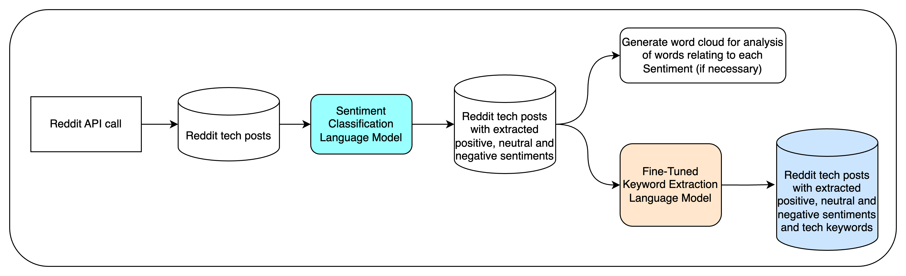

Retrieve Reddit Posts and Extract Sentiments and Keywords¶
This document provides step-by-step instructions on how to run the pipeline defined in infer_pipeline.py. The pipeline consists of three main scripts: scrape_reddit.py, sentiment_analysis.py, and extract_reddit_keywords_with_bart.py. Each script performs a specific function in the data processing workflow.
Pipeline Overview¶
{kind=link}
Prerequisites¶
- Reddit API Credentials: You need to create a Reddit application to obtain the following credentials:
CLIENT_ID
SECRET_KEY
REDDIT_GRANT_TYPE
REDDIT_USERNAME
REDDIT_PASSWORD
Store these credentials in a .env file in the same directory as your scripts.
Configuration File¶
The configuration for the pipeline is stored in conf/config.yaml. You need to prepare this file before running the pipeline. Below are the key sections you need to configure:
PRAW Configuration: - praw_output: The name of the output CSV file for scraped Reddit data. - subreddits: A list of subreddit names to scrape.
Example:
praw:
praw_output: praw_output.csv
subreddits:
- datascience
- MachineLearning
- ChatGPT
- CharacterAI
- cybersecurity
Sentiment Analysis Configuration: - input_file: The input CSV file generated from the scraping step. - output_file: The name of the output CSV file for sentiment analysis results. - model_name: The model to be used for sentiment analysis.
Example:
sentiment:
input_file: praw_output.csv
output_file: sentiment_analysis_output.csv
model_name: distilbert-base-uncased-finetuned-sst-2-english
Keyword Extraction Configuration: - reddit_dataset: The input file for keyword extraction (output from sentiment analysis). - reddit_results_file: The output file for extracted keywords.
Example:
extract:
reddit_dataset: sentiment_analysis_output.csv
reddit_results_file: reddit_keywords.csv
Running the Pipeline¶
To run the entire pipeline, execute the following command in your terminal:
python -m src.infer_pipeline
This command will sequentially run the following scripts:
Scrape Reddit Data (scrape_reddit.py):
Function: Scrapes posts and comments from specified subreddits.
Output: A CSV file containing the scraped data (as specified in praw_output).
Sentiment Analysis (sentiment_analysis.py):
Function: Analyzes the sentiment of the comments scraped from Reddit.
Output: A CSV file containing sentiment analysis results (as specified in output_file).
Keyword Extraction (extract_reddit_keywords_with_bart.py):
Function: Extracts keywords from the sentiment analysis results using the BART model.
Output: A CSV file containing the extracted keywords (as specified in reddit_results_file).
Expected Outputs¶
Scraped Data: praw_output.csv - Contains the scraped Reddit posts and comments.
Sentiment Analysis Results: sentiment_analysis_output.csv - Contains sentiment scores and labels for each comment.
Extracted Keywords: reddit_keywords.csv - Contains keywords extracted from the sentiment analysis results.
Conclusion¶
By following these instructions, you should be able to successfully run the pipeline and obtain the desired outputs. Ensure that all configurations are correctly set in config.yaml and that you have the necessary credentials and libraries installed.